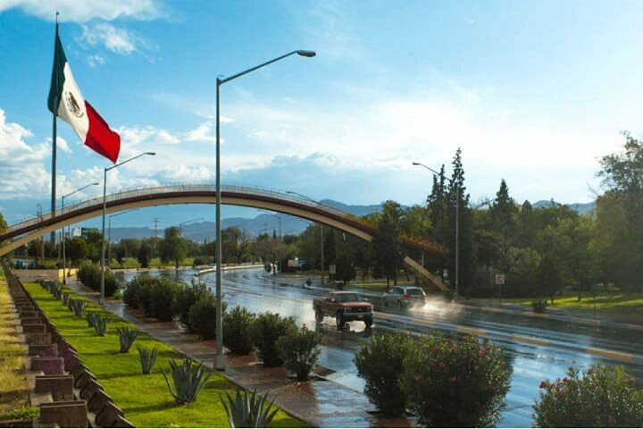
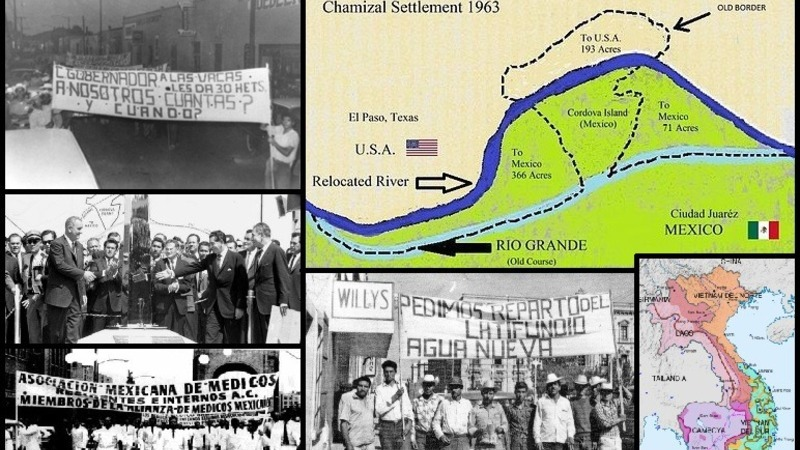
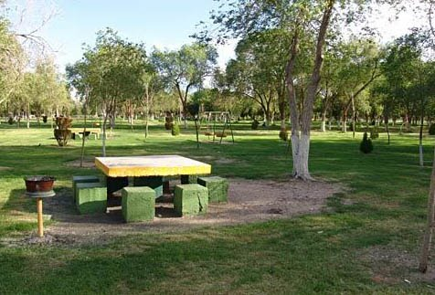
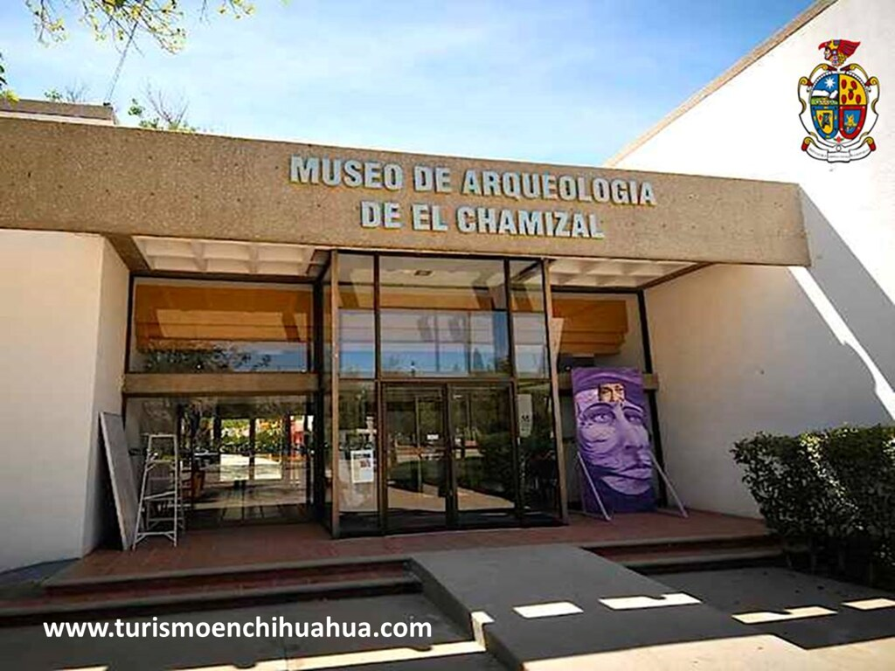
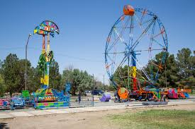

¿Qué es el Chamizal?
El Chamizal es un área de gran valor histórico, cultural y ecológico, ubicada en el corazón de Ciudad Juárez. Más que un simple parque, representa la resolución pacífica de un largo conflicto territorial entre México y Estados Unidos, convirtiéndose en un símbolo de diplomacia y cooperación binacional. Este espacio es un pulmón verde fundamental para la ciudad, un punto de encuentro para familias y un testimonio viviente de la identidad fronteriza. Su nombre proviene del "chamizo", una planta local que crecía en abundancia en la zona, y su historia está intrínsecamente ligada al curso errante del Río Bravo. Hoy, es un epicentro de vida comunitaria y un recordatorio de cómo los desafíos pueden transformarse en oportunidades para el crecimiento y la convivencia.
Historia y resolución del conflicto fronterizo
El conflicto de El Chamizal se originó en 1864, cuando un cambio en el cauce del Río Bravo, que servía como frontera natural desde el Tratado de Guadalupe Hidalgo de 1848, desplazó la frontera hacia el sur, dejando una porción de territorio mexicano del lado estadounidense. Durante casi un siglo, este desplazamiento generó tensiones diplomáticas entre ambos países. La disputa se resolvió finalmente en 1963, gracias a la Convención de El Chamizal. En un acto sin precedentes de diplomacia, los presidentes John F. Kennedy y Adolfo López Mateos acordaron la devolución de 177 hectáreas a México. Este hecho marcó un hito en las relaciones bilaterales, demostrando que los desacuerdos pueden resolverse de manera pacífica, respetando los principios de soberanía y justicia. La entrega formal del territorio tuvo lugar en 1967, consolidando un nuevo capítulo en la historia de la región
Parque Público Federal El Chamizal
Tras la resolución del conflicto, se estableció el Parque Público Federal El Chamizal, el más grande de Ciudad Juárez. Cuenta con áreas verdes, lago, canchas deportivas, ciclopistas y monumentos históricos, convirtiéndose en un lugar de esparcimiento para la comunidad.
Centro cultural y educativo
El parque alberga el Museo de Arqueología e Historia de El Chamizal, administrado por el INAH, donde se exhiben la historia prehispánica, la evolución del río Bravo y la resolución del conflicto fronterizo, fomentando la educación y el conocimiento cultural de la región.
Impacto social y cultural
El Chamizal representa la identidad cultural de Ciudad Juárez y la resolución pacífica de conflictos. Es sede de eventos culturales y festivales que promueven el intercambio entre Ciudad Juárez y El Paso, fortaleciendo los lazos binacionales y la cohesión social.
